Abstract
SkinPact is a testnet escrow marketplace for CS2 skins. It separates two concerns that Steam trades couple together: the transfer of the item and the transfer of value. The buyer funds on-chain escrow, the seller locks a bond, and the seller sends a Steam trade offer. The buyer can confirm receipt, or the seller can claim delivery with off-chain evidence; the buyer has a challenge window, and a designated arbiter settles disputes. The contract never claims to verify Steam.
This report analyzes the system experimentally. E1 measures the gas cost of all eleven state-changing operations on local Hardhat and Sepolia, compares gas with 1% / 2.5% / 5% platform fees, and derives break-even item prices. E2 builds a 42-scenario threat model, executes 67 automated tests and a 99-check local E2E flow, runs Slither and coverage, and distills the result into findings and a trust table. The central result is honest rather than promotional: the escrow design is coherent and no exploitable authorization, reentrancy, or double-settlement defect was found in the tested scope, but L1 gas makes low-priced trades uneconomic, Steam delivery remains unverifiable on-chain, and the arbiter plus the buyer Trade URL are the residual trust points. The system is a testnet prototype, not a production marketplace.
Introduction
1.1 The problem
CS2 skins are valuable digital assets that live inside Steam, not on a public ledger. A trade is executed through a Steam trade offer: the seller selects the item, the buyer accepts in Steam Guard, and Steam transfers custody. The trade is asynchronous, off-chain, and irreversible once accepted. A buyer who pays first risks non-delivery; a seller who delivers first risks non-payment. Platform intermediaries reduce this risk but charge for it. The Steam Community Market charges a 15% seller fee for CS2 items (5% Steam transaction fee plus 10% game fee), and the seller receives Steam Wallet balance rather than withdrawable cash.[1] Third-party markets such as BUFF163 and YouPin898 advertise lower seller fees — 1.5% and 1%, respectively, at the time of writing — but they still introduce custody, account, and platform-trust assumptions.[2][3]
The core design question is not “how do we remove fees?” A zero-fee marketplace that loses the item is worse than a 15% fee. The question is whether a smart-contract escrow can provide a credible settlement layer around an off-chain delivery rail, and what that costs.
1.2 Research questions
- RQ1 — Cost. How much gas does each SkinPact operation consume, and at what item price does gas become cheaper than a 1%, 2.5%, or 5% platform fee?
- RQ2 — Trust. Can the contract, Relay, and helper resist unauthorized calls, reentrancy, state bypasses, fake claims, and Trade URL leakage? Which trust assumptions remain?
- RQ3 — Usability. Can a new user understand the seller-helper and Steam-accept flow? We did not run a formal user study; this is treated as a disclosed limitation, not as evidence.
1.3 Contributions
- A concrete S2-mini escrow design with a bond, pull payments, a challenge window, and an arbiter-backed dispute path.
- A reproducible gas dataset covering all eleven operations on local Hardhat and Sepolia, with source-linked fee data and break-even analysis.
- A report-level security analysis: 42 threat scenarios, 17 findings, a trust table, static analysis, coverage, and a 99-check E2E flow.
- An explicit accounting of what the experiments do not prove: Steam delivery, production security, and user acceptance.
Background and Related Work
2.1 Steam delivery
A Steam trade offer is a bearer-style, asynchronous transfer. The recipient accepts it in the Steam mobile app, and the trade is final once Steam processes it. The seller cannot prove delivery to a smart contract, and the buyer cannot prove non-delivery to a smart contract either. Any system that escrows value around a Steam trade can only record observations made by a trusted or semi-trusted component. This is the central boundary of SkinPact.
2.2 Marketplace economics
Table 3 in §6.3 compares the rates used in this report. The important distinction is between a platform fee and a transaction cost. A platform fee scales with item price; L1 gas is roughly fixed per operation. For cheap skins, the fixed cost dominates. The experiment is designed to make that trade-off visible rather than to claim that “zero fee” means “zero cost.”
2.3 Escrow, bonds, and pull payments
SkinPact uses a small set of well-understood mechanisms: an on-chain escrow, a seller bond proportional to price (minimum 0.001 test ETH), pull payments for withdrawals, and a status machine that prevents settlement from a terminal state. The arbiter is the only privileged role. The contract has no owner, no emergency withdrawal, and no upgrade path. These choices reduce on-chain authority but move trust into the arbiter and the off-chain evidence process.
2.4 Market context
To ground the fee analysis in real listings, we sampled four CS2 items across price bands on the Steam Community Market on 2026-11-07. The sample spans a $21.79 pistol skin to a $479.83 rifle skin. These prices are market context; the on-chain experiments use a fixed 0.01 test ETH listing, not real money.
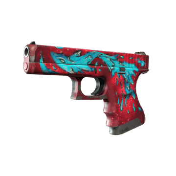
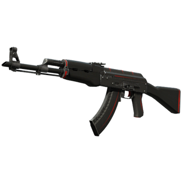
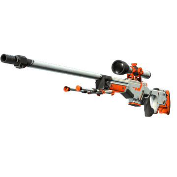
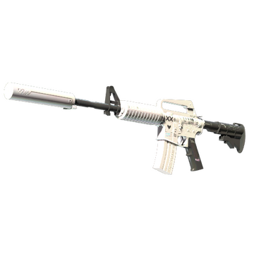
The delivery rail is Steam, but the competing marketplaces are not. Steam Community Market, BUFF163, and YouPin898 all list the same kind of item with different fee and custody models. The screenshots below are public pages, included to make the comparison concrete rather than to endorse a vendor.
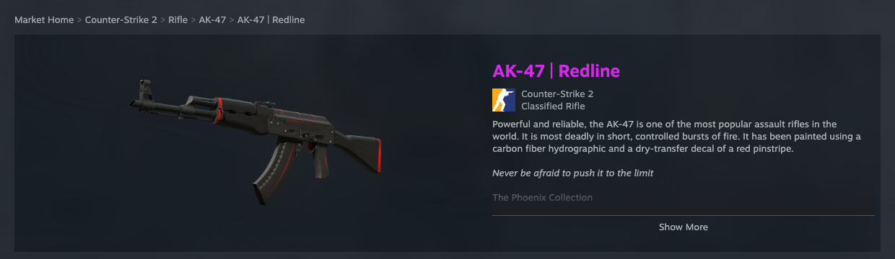
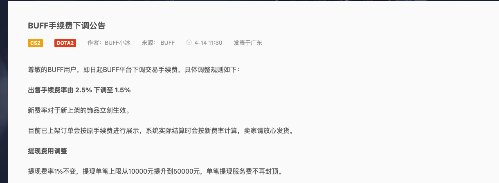
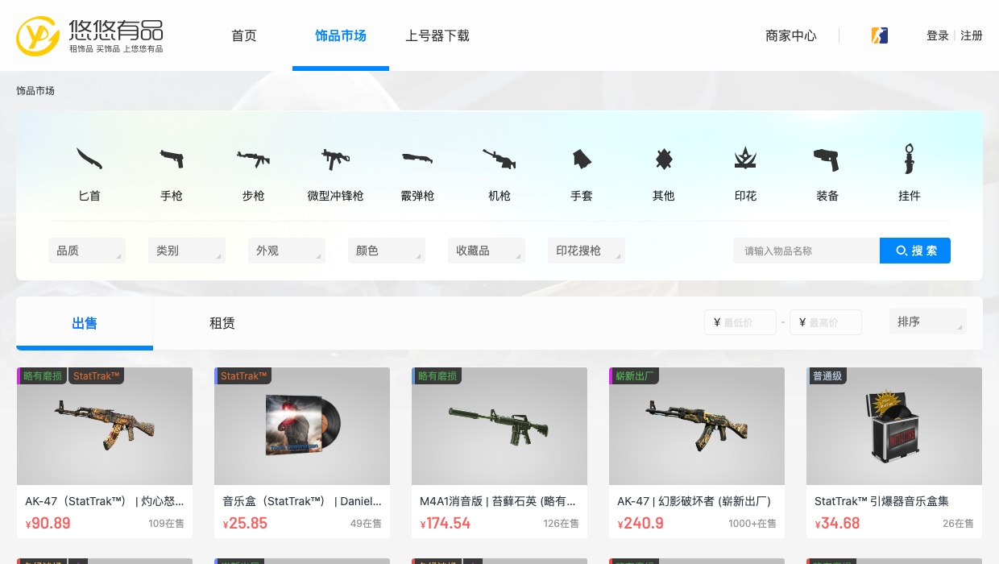
The screenshots are illustrative and may show localized currencies or promotional content. The numeric analysis uses the source-linked fee rates and the USD Steam Market API prices, not OCR from the images.
Design
3.1 Roles and trust boundaries
Five roles participate: seller, buyer, arbiter, Relay, and the seller-local helper. Steam is the external delivery system. The buyer and seller use a React web client and MetaMask; the seller also runs a local helper that holds the Steam session and sends the trade offer. The Relay stores item metadata, authenticates wallets, pairs helpers, and holds the buyer Trade URL encrypted at rest. The contract holds escrow and is the only component that can move funds.
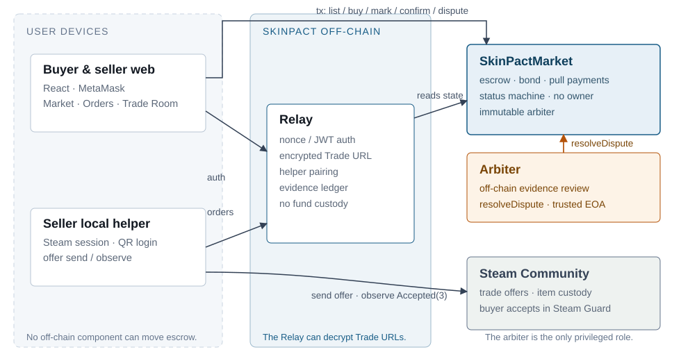
3.2 State machine
The contract has nine states. The happy path is Active → Funded → OfferSent → ClaimPending → Completed. The seller can cancel only while Active; the buyer can confirm from Funded, OfferSent, or ClaimPending; anyone can expire a Funded order after the offer deadline; and a buyer dispute from ClaimPending moves the order to Disputed before the challenge deadline. Once disputed, only the arbiter can settle.
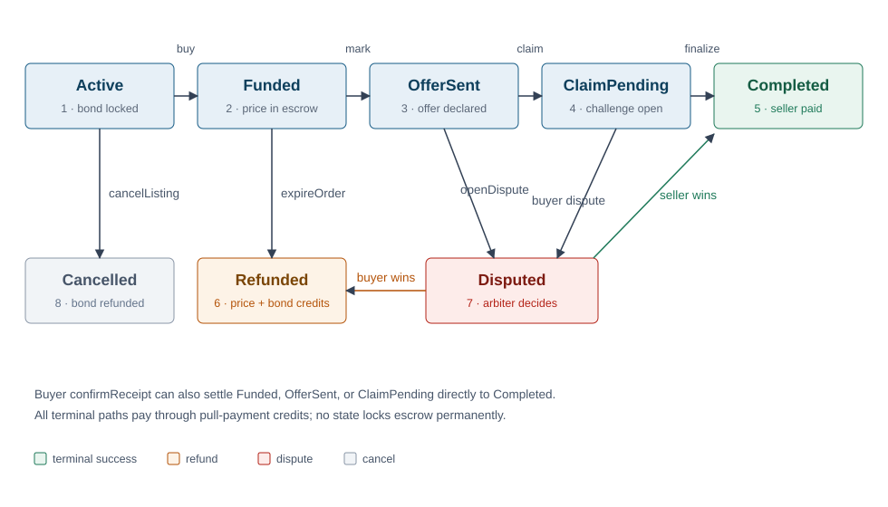
3.3 Escrow, bond, and pull payments
When a seller creates a listing, the bond is max(price / 10, minBond). With a 0.01 test ETH price and a 0.001 test ETH minimum bond, the seller locks 0.001 and the buyer later locks 0.01. The contract credits balances rather than pushing ETH during settlement, and withdraw() is guarded by OpenZeppelin's ReentrancyGuard.[7] The design has no owner, no emergency withdrawal, and no upgrade path; the arbiter is immutable at construction.
3.4 Dispute and liveness
A dispute can be opened from OfferSent by either party before the delivery deadline, or by anyone after it. From ClaimPending, only the buyer can dispute before the challenge deadline. The arbiter can resolve a disputed listing in either direction, optionally awarding the seller bond to the buyer. Three permissionless paths keep the system live: expireOrder after the offer deadline, finalizeClaim after the challenge deadline, and openDispute after the delivery deadline. None of these verify Steam; they only bound how long escrow can wait.
Implementation
4.1 Contract and monorepo
SkinPact is a TypeScript monorepo with four workspaces: shared (hashing, ABI, Trade URL parsing), contracts (Solidity 0.8.24, Hardhat), relay (Express, SQLite, ethers), and helper (Steam session, trade-offer manager, local loopback API). The web client is React/Vite with MetaMask. The contract is deployed and verified on Sepolia at 0x2Ffca056…460eF; the deployment uses a 0.1 test ETH max price, a 0.001 test ETH minimum bond, a 600 s offer window, a 300 s challenge window, and a 3,600 s delivery window.
4.2 Off-chain coordination
The Relay authenticates wallets with a one-time nonce and a signed message, then issues a one-hour JWT. It stores buyer Trade URLs with AES-256-GCM, reveals them only to the funded listing's seller, and deletes the row when the listing becomes terminal. The helper pairs with a one-time six-digit code, holds the seller's Steam session locally, sends the trade offer, observes the Steam state, and uploads an acceptance evidence hash. The buyer's Trade URL is a bearer secret; the Relay can decrypt it at runtime. This is a deliberate, disclosed trust boundary, not an accident.
4.3 Evidence base
The implementation is supported by 67 automated tests: 36 contract tests, 18 Relay tests, 12 helper tests, and 1 shared test. The local E2E flow exercises P1–P8 with 99 checks against a real in-process Relay and an ephemeral Hardhat chain; Steam is explicitly mocked. The E2E covers buyer confirmation, seller claim plus challenge finalization, expiry, cancellation, Trade URL encryption and cleanup, and three dispute outcomes. The Sepolia completion smoke adds the four operations the original smoke did not cover: claimAccepted, finalizeClaim, expireOrder, and withdraw.
| Layer | Implemented behavior | Evidence |
|---|---|---|
| Contract | Escrow, bond, status machine, disputes, pull payments | 36 tests; invariant checks |
| Relay | Wallet auth, encrypted Trade URL vault, helper pairing, evidence | 18 tests; E2E P4 |
| Helper | QR login, offer send/observe, redaction, local API | 12 tests; manual Steam exit check |
| E2E | P1–P8 contract + Relay flow | 99 checks; Steam mocked |
| Sepolia | Deployment, verification, 11 operations | Verified contract; 22 Sepolia txs (15 gas rows) |
Experiment Methodology
E1 and E2 ask different questions but use the same discipline: define the question, instrument the environment, execute a reproducible procedure, normalize the raw data, and validate the claims against limitations. The local vs Sepolia gas discrepancy is treated as a finding, not smoothed away.
Measurement conventions. Local gas is measured on a fresh in-process Hardhat chain. Setup transactions are excluded; only the target operation's receipt is recorded. Local transactions use a fixed 1 gwei reporting price so the fee column is deterministic; this is a reporting convention, not a market price. Sepolia gas comes from real receipts. The local and Sepolia numbers are never summed.
Assumptions. The economic illustration assumes $3,000 per ETH and gas prices of 1, 10, and 50 gwei. Test ETH has no real value. The observed Sepolia gas price during the runs was 16–19 wei, which is an idle-testnet artifact and is not used for the economic conclusion. The 1% / 2.5% / 5% fee tiers are sensitivity inputs; the competitor rates are sourced separately.
E1 — Gas, Fees, and Break-even
6.1 Method
E1 measures the eleven state-changing operations defined in the S2-mini contract: createListing, buy, markOfferSent, confirmReceipt, claimAccepted, finalizeClaim, expireOrder, cancelListing, openDispute, resolveDispute, and withdraw. The scenario is a 0.01 test ETH listing with a 0.001 bond, matching the deployment configuration. Local measurements ran on the in-process Hardhat network; Sepolia measurements combine the original 2026-11-06 smoke with a 2026-11-07 completion smoke that waited through the real 300 s challenge window and 600 s offer window.
6.2 Gas results
Table 2 reports gas used per operation on both environments. The four rows highlighted in blue are the happy path. Sepolia's state-creating operations are substantially more expensive than local Hardhat's; expireOrder and withdraw are close to local because they do not create as many new storage slots.
| Operation | Local Osaka | Sepolia Amsterdam | Ratio |
|---|---|---|---|
| createListing | 175,001 | 709,721 | 4.06× |
| buy | 57,394 | 152,614 | 2.66× |
| markOfferSent | 77,952 | 255,092 | 3.27× |
| confirmReceipt | 64,161 | 55,845 | 0.87× |
| claimAccepted | 55,698 | 144,830 | 2.60× |
| finalizeClaim | 44,549 | 151,253 | 3.40× |
| expireOrder | 68,820 | 67,704 | 0.98× |
| cancelListing | 42,645 | 51,429 | 1.21× |
| openDispute | 79,966 | 257,106 | 3.22× |
| resolveDispute | 45,958 | 152,662 | 3.32× |
| withdraw | 32,399 | 43,004 | 1.33× |
Local: Hardhat 2.29.1, Osaka default, target-tx gas only, fixed 1 gwei reporting price. Sepolia: receipt gasUsed, 0.01 test ETH price, 0.001 bond. Ratios are Sepolia ÷ local; values below 1 mean Sepolia was cheaper.
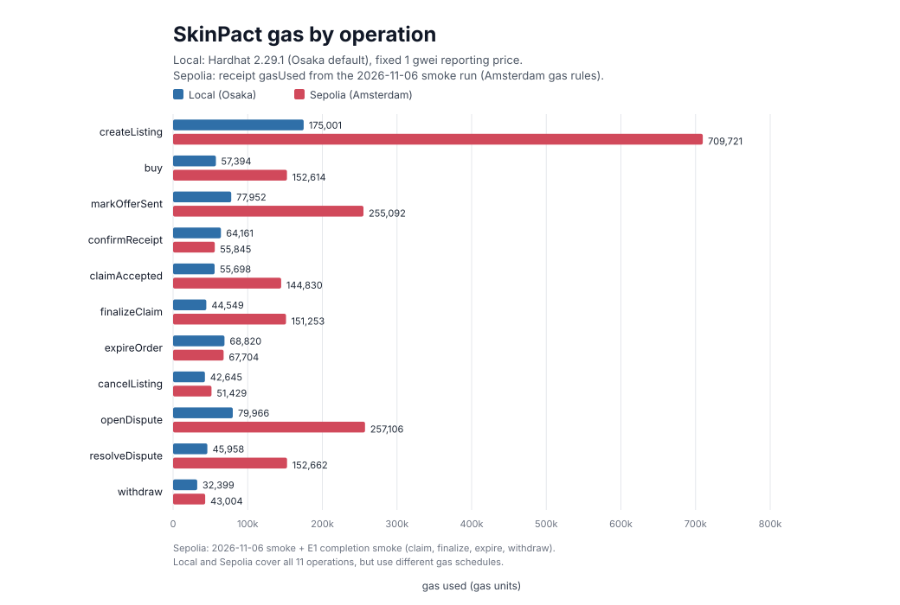
6.3 Fee comparison
The analysis uses two kinds of numbers. The 1% / 2.5% / 5% tiers are hypothetical sensitivity inputs; they are not claims about a specific competitor. The competitor rates in Table 3 are sourced and dated. BUFF's official announcement is authoritative for 1.5%, although third-party trackers still display 2.5–3%. The discrepancy is disclosed rather than silently resolved.
| Platform | Seller fee | Buyer fee | Source and date | Note |
|---|---|---|---|---|
| Steam Community Market (CS2) | 15% | 0% | SteamDB, accessed 2026-11-07 | 5% Steam + 10% CS2 game fee |
| BUFF163 | 1.5% | 0% | Official announcement, accessed 2026-11-07 | Cut from 2.5% to 1.5% (effective 4-14); withdrawal 1% |
| YouPin898 | 1% | 0% | SteamDB, last verified 2026-07-01 | Seller fee only |
| Assumed tiers | 1% / 2.5% / 5% | 0% | Analysis assumption | Sensitivity inputs, not competitor claims |
6.4 Break-even
Break-even item price is the gas cost of a successful trade divided by the fee rate. The happy path is createListing + buy + markOfferSent + confirmReceipt; withdraw is a post-settlement payout and is excluded from the sum, so the numbers below are a lower bound on total cost. At 10 gwei and $3,000/ETH, the Sepolia happy path costs about $35.20; the local Osaka path costs about $11.24.
| Fee rate | Sepolia gas cost | Sepolia break-even | Local gas cost | Local break-even |
|---|---|---|---|---|
| 1% | $35.20 | $3,520 | $11.24 | $1,124 |
| 2.5% | $35.20 | $1,408 | $11.24 | $449 |
| 5% | $35.20 | $704 | $11.24 | $225 |
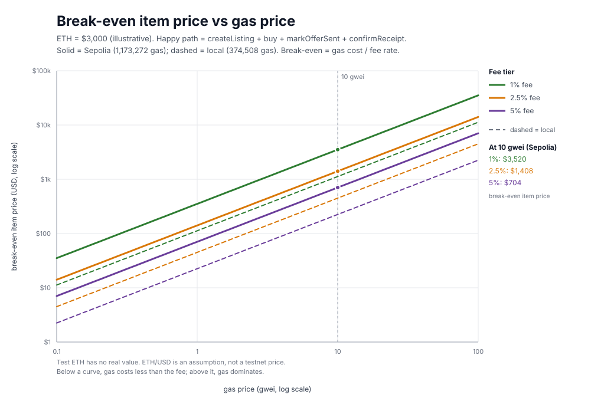
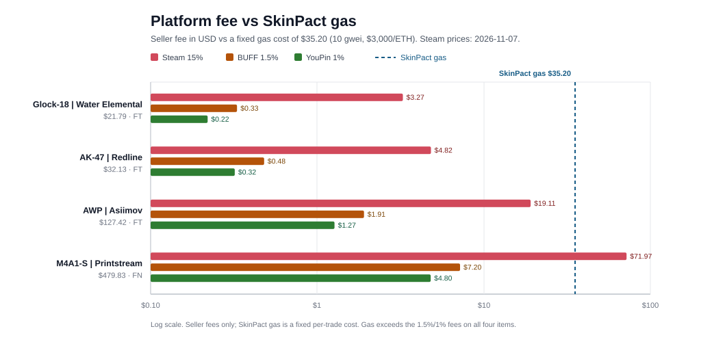
6.5 Interpretation
Figure 8 makes the fixed-cost problem concrete. On the $21.79 Glock and the $32.13 AK-47, gas is roughly 7–11× the Steam fee; on the $479.83 M4A1-S, gas ($35.20) is below Steam's $71.97 fee but still above BUFF's $7.20 and YouPin's $4.80. L1 escrow therefore does not undercut the 1–1.5% centralized markets at these price points; its case rests on custody and dispute design, not on transaction cost.
For cheap CS2 skins, the fixed L1 cost dominates. At a 1% fee, an item must be worth more than roughly $3,520 before gas is cheaper than the fee; at 2.5%, roughly $1,408; at 5%, roughly $704. The local Osaka numbers are lower but are not the deployment environment. The honest conclusion is that a zero platform fee is not a zero cost. The design is more attractive on an L2 or with a cheaper execution environment, or for higher-priced items. The observed Sepolia fees during the runs (16–19 wei; 70,700,971 wei across the original and completion target transactions) are an idle-testnet artifact and are not representative.
6.6 Why four on-chain transactions?
The current version deliberately keeps every state transition on-chain: createListing locks the bond and writes the listing, buy funds escrow, markOfferSent records the seller's declaration, and confirmReceipt settles. This maximizes on-chain auditability: the contract, not a server, holds the authoritative order state, and anyone can reconstruct the path. The cost is four transactions: 1,173,272 gas ≈ $35.20 at 10 gwei and $3,000/ETH. Two observations matter for a v2: markOfferSent is 255,092 gas (22%) and moves no funds, while createListing is 709,721 gas (60%) and includes the bond.
A v2 would use an EIP-712 signed listing off-chain, a reusable bond vault (one deposit, reused across listings), and an off-chain signed mark attestation; only two transactions remain on-chain: buyer funding (buy) and settlement (confirmReceipt, or claimAccepted plus finalizeClaim). At the same Sepolia gas units and 10 gwei/$3,000, funding plus confirmation is 208,459 gas ≈ $6.25 (about 82% less), plus the bond deposit and optional withdrawal; the claim path is 448,697 gas ≈ $13.46. This is the model used by NFT order books: Seaport and 0x keep listings and orders off-chain as signed messages and settle only fulfillment on-chain.[15][16] Centralized CS2 markets go further: Skinport, BUFF, and YouPin use an internal ledger and Steam trade bots, so the buyer pays no chain gas at all, in exchange for platform fees and custody.[17][18]
The trade-off is real: an off-chain order book depends on the Relay serving valid signed orders, with replay protection, cancellation, and expiry; the bond still needs on-chain collateral; and the buyer still needs one funding transaction and one settlement transaction for a trust-minimized escrow. The current version chooses maximum on-chain auditability for the course; the compressed flow, a relayer/paymaster, or an L2 is future work. A relayer or paymaster can hide gas from the user, but it cannot make the network fee disappear—someone still pays it.
E2 — Security and Trust Boundaries
7.1 Threat model
E2 asks whether the contract, Relay, and helper can resist unauthorized calls, reentrancy, state bypasses, fake claims, and Trade URL leakage — and which trust assumptions remain. The threat model covers malicious buyers, sellers, arbiters, Relay operators, helper operators, local machine attackers, and network attackers. Assets include escrowed price and bond, the CS2 item, buyer Trade URLs, seller Steam sessions, evidence, and the Relay's encryption and JWT secrets. The full model contains 42 scenarios; the most important are summarized in Table 5.
| ID | Threat | Mitigation | Residual |
|---|---|---|---|
| T-01 | Unauthorized party calls seller/buyer/arbiter functions | Role checks; 36 contract tests | None found |
| T-04 | Double settlement or replay | Terminal-state guards; status machine | None found |
| T-06 | Offer hash reused across listings | Global usedOfferIdHash | None found |
| T-07 | Finalize before the challenge window | ChallengeNotExpired | None found |
| T-11 | Fake claimAccepted | Buyer dispute; arbiter review | Steam unverifiable (F-01) |
| T-12 | Buyer freezes a claim by disputing | Arbiter resolution | Griefing (F-04) |
| T-13 | Seller marks an offer without sending it | Buyer dispute; arbiter review | Freeze (F-05) |
| T-17 | Trade URL leaks via API/DB/logs | AES-256-GCM; seller-only; cleanup; redaction | Relay can decrypt (F-03) |
| T-20 | Login signature replay | One-time nonce; 5-minute TTL | None found |
| T-25 | DNS rebinding against helper API | Loopback host check; origin allowlist | Local malware (F-13) |
7.2 Evidence pipeline
7.3 Results
All 67 automated tests pass. The local E2E flow passes 99 checks across P1–P8. Slither 0.11.6 reports zero High/Medium findings and five informational instances: four timestamp comparisons in deadline logic and one low-level call in withdraw. Coverage is 100% of statements, functions, and lines and 87.5% of branches.
7.4 Findings
The findings are reported as trust-boundary and design risks, not as exploitable code vulnerabilities. The severity distribution is 1 high-impact accepted trust boundary (F-03), 3 medium, 8 low, and 5 informational; there are no critical or high code-vulnerability findings. The six findings below drive the security narrative.
| ID | Finding | Severity | Evidence | Residual risk |
|---|---|---|---|---|
| F-01 | Steam delivery cannot be verified on-chain | Medium | Claim path; E2E P7; threat model T-11 | Arbiter reviews off-chain evidence |
| F-02 | Arbiter is a single immutable EOA | Medium | Contract design; trust table | Key loss or abuse; no rotation |
| F-03 | Buyer Trade URL is a bearer secret the Relay can decrypt | High impact / accepted | Relay tests; E2E P4 | Relay host compromise; user must accept offer |
| F-04 | Buyer can freeze a seller claim by disputing | Low | E2E P7; contract tests | Temporary griefing; arbiter resolves |
| F-05 | Seller can mark an offer without sending it | Low | Contract tests; threat model T-13 | Buyer must dispute; time cost |
| F-06 | Buyer-first Accept race cannot be proven on-chain | Medium | Workflow analysis; manual Steam check | Procedural constraint; off-chain evidence |
7.5 Trust table
The trust table is the complement to the findings: it states what each component can do unilaterally. The contract has no owner and no upgrade path; the arbiter is privileged only on Disputed listings; the Relay can decrypt Trade URLs but cannot move escrow; the helper can observe Steam but cannot sign for the seller; Steam is authoritative for the item but invisible to the contract.
| Component | Trusted for | Can unilaterally | Cannot | Enforced by |
|---|---|---|---|---|
| SkinPactMarket | Correct state and accounting | Move escrow only through coded paths | Upgrade, add an owner, or withdraw arbitrarily | Immutable bytecode; no owner |
| Arbiter | Fair interpretation of evidence | Resolve any Disputed listing | Touch non-disputed states; resolve twice | NotArbiter; NotDisputed |
| Relay | Auth, URL vault, evidence bookkeeping | Decrypt Trade URLs at runtime | Move escrow; reveal URL to a non-seller | JWT/helper tokens; AES-256-GCM; on-chain role checks |
| Helper | Truthful Steam observation | Send offers; report evidence | Sign for the seller; claim funds | Seller runs it; Relay scopes by seller; Steam is source of truth |
| Steam | Item custody and transfer | Delay, deny, or reverse offers | Move on-chain escrow | None; evidence is observational |
7.6 Discussion
The strongest result is negative: within the tested scope, there is no authorization, reentrancy, double-settlement, or Trade URL access-control defect. The contract's state machine and pull-payment accounting held under mixed-state invariants; the Relay kept the raw Trade URL out of API payloads, database rows, and reports; and the helper's loopback API rejected DNS-rebinding hosts and disallowed origins. The residual risk is trust, not a missing check: Steam cannot be verified, the arbiter is a single key, and the Relay can decrypt the buyer's bearer URL. Those are disclosed constraints, not hidden vulnerabilities.
Usability
A formal usability study was not conducted. The analysis focuses on cost and security, and the remaining time was allocated to the deliverable pipeline. Usability evidence is therefore limited to the manual local E2E flow and the manual real-Steam exit check: the seller scans a QR code, pairs the helper, lists an item; the buyer saves an account, funds escrow, and accepts the offer in Steam Guard; the seller marks the offer and the buyer confirms. The flow is functional but not validated with independent users.
If a usability study is added, the intended protocol is a 2–3 reviewer Nielsen heuristic rather than a user study: reviewers walk the four tasks above, record completion, friction, and severity, and the report labels the result explicitly as a heuristic evaluation. No fabricated SEQ/SUS scores are presented here.
Security and Limitations
The following constraints are part of the contribution, not fine print. They should be read alongside the positive results.
| Limitation | Impact | Status |
|---|---|---|
| Steam delivery is off-chain and unverifiable | False claims require arbitration; no on-chain proof | Disclosed (F-01) |
| Arbiter is a single immutable EOA | Key loss disables disputes; abuse can misdirect funds | Disclosed (F-02) |
| Trade URL is a bearer secret; Relay can decrypt | Relay compromise leaks active URLs; user must still accept | Disclosed (F-03) |
| No formal usability study | No user-level evidence for the helper/Steam flow | Disclosed (§8) |
| Test ETH has no value; mock Steam in E2E | Economic and delivery results are illustrative | Disclosed throughout |
| No third-party audit or formal verification | Static analysis and tests are not a security guarantee | Disclosed (§7) |
| L1 gas dominates low-priced trades | Break-even is high at 1% fees | Disclosed (E1) |
| Challenge notifications rely on UI polling | Buyer may miss a challenge window | Disclosed (F-07) |
Testnet-only statement. SkinPact is a course prototype. Escrow uses Sepolia test ETH, which has no real value. CS2 items remain off-chain assets. The system is not intended for mainnet, real money, or production use.
Mock statement. The automated local E2E uses a mocked Steam transport; the helper's offer and acceptance reports are simulated there. The real-Steam acceptance is a separate manual exit check and is not claimed as automated evidence. The video and report must label real vs mock consistently.
Conclusion and Future Work
SkinPact shows that a small, auditable escrow state machine can coordinate a Steam delivery without custodial fund authority. The contract has no owner, no upgrade path, and no emergency withdrawal; the bond and pull-payment design return funds on every terminal path; the dispute path gives the parties a last resort when delivery is contested. E1 makes the cost visible: at 10 gwei and $3,000/ETH, a successful Sepolia trade costs about $35 in gas, and a 1% fee only breaks even above roughly $3,520. E2 makes the trust visible: no High/Medium static findings, no exploitable authorization or double-settlement defect in the tested scope, but Steam remains unverifiable, the arbiter is a single key, and the Relay can decrypt the buyer's Trade URL.
Future work should move in four directions: (1) an L2 or stablecoin settlement path so low-priced skins are economic; (2) a multi-signature or policy-bound arbiter with an evidence-read API and a documented chain of custody; (3) a key-management design for the Relay's Trade URL vault (KMS/HSM, minimized retention, helper-token revocation); and (4) a real usability study of the seller-helper and Steam-accept flow. None of these changes the core claim: the escrow is a coordination layer around an off-chain delivery rail, and its value depends on making both the cost and the trust explicit.
Team Contributions
Names and percentages are completed by the team before submission. The file name uses the team-member count, for example 5-SkinPact.pdf.
| Role | Responsibility | Primary evidence | Contributor |
|---|---|---|---|
| R1 | Project management, report, contribution table, submission | Report, spec, QA | — |
| R2 | Contract, security, E1/E2, Sepolia, Slither | Contract, E1/E2 evidence | — |
| R3 | Web, Relay, helper, Steam, demo integration | Web, Relay, helper tests | — |
| R4 | Data, experiments, charts | E1 dataset, figures | — |
| R5 | Slides, video, rehearsal, backup | Slides, video links | — |
References
- SteamDB. “Steam Market Review.” https://steamdb.com/en/markets/steam (accessed 2026-11-07). Seller fee 15% = 5% Steam transaction fee + 10% CS2 game fee; buyer fee 0%.
- BUFF163. “BUFF手续费下调公告” (announcement 87397). https://buff.163.com/news/87397 (accessed 2026-11-07). Seller fee cut from 2.5% to 1.5%; withdrawal fee 1%.
- SteamDB. “YouPin Review.” https://steamdb.com/en/markets/youpin (last verified 2026-07-01; accessed 2026-11-07). Seller fee 1%, buyer fee 0%.
- Ethereum Foundation. “EIP-8037 / EIP-8038 Glamsterdam.” https://blog.ethereum.org/2026/11/06/glamsterdam-8037-8038 (2026-11-06). State creation and state access repricing.
- Hardhat. “Amsterdam hardfork support.” https://hardhat.org/docs/reference/amsterdam-support (accessed 2026-11-07).
- EIP-7708: ETH transfers emit a log. https://eips.sh/eip/7708 (accessed 2026-11-07).
- OpenZeppelin. “ReentrancyGuard.” https://docs.openzeppelin.com/contracts/5.x/api/utils#ReentrancyGuard (accessed 2026-11-07).
- Hardhat. https://hardhat.org (accessed 2026-11-07).
- Crytic. “Slither.” https://github.com/crytic/slither (accessed 2026-11-07).
- solidity-coverage. https://github.com/sc-forks/solidity-coverage (accessed 2026-11-07).
- ethers.js v6 documentation. https://docs.ethers.org/v6/ (accessed 2026-11-07).
- MetaMask developer documentation. https://docs.metamask.io (accessed 2026-11-07).
- SkinPact repository. https://github.com/identity411/dapps (commit 6d8ffa0; accessed 2026-11-07).
- Sepolia Etherscan. SkinPactMarket verified contract. https://sepolia.etherscan.io/address/0x2Ffca05611801F532Afc6135b56baBEB0D7460eF#code (accessed 2026-11-07).
- OpenSea. “Introducing Seaport Protocol.” https://blog-v3.opensea.io/articles/introducing-seaport-protocol (accessed 2026-11-07). EIP-712 signed orders, fulfillment, batching.
- 0x Protocol: off-chain order relay and on-chain settlement. https://www.gate.com/learn/articles/how-does-0x-protocol-work (accessed 2026-11-07).
- SteamDB. “Skinport Review.” https://steamdb.com/en/markets/skinport (verified 2026-07-02; accessed 2026-11-07). Seller fee 8% standard; reduced tiers for high-value/private listings.
- Skinport. “Is Skinport Safe and Secure?” https://skinport.com/blog/is-skinport-safe-and-secure (accessed 2026-11-07). Custodial bot flow; no blockchain settlement.
Appendix A — Sepolia Evidence
The contract is deployed and verified on Sepolia. The completion smoke used the same verified contract and waited through the real windows; no new contract was deployed for E1.
| Item | Value |
|---|---|
| Contract | 0x2Ffca05611801F532Afc6135b56baBEB0D7460eF |
| Network / chain ID | Sepolia / 11155111 |
| Deployment tx | 0xa13facad2e103aa5df7fe0d876f73e742cb3ba4c9c9a7a037d446f52c22e04e6 |
| Deployment block | 12077649 |
| Constructor | maxPrice 0.1 ETH; minBond 0.001 ETH; offer 600 s; challenge 300 s; delivery 3600 s; arbiter 0xfc73…6D53 |
| Verification | Etherscan · Exact Match |
| claimAccepted | 0x9c460ea01743acebb4e966320965db0aa677d60dea7bfecdf564118ee7faab55 · 144,830 gas |
| finalizeClaim | 0x23785c86b1effc6b2a43fa3363b75bf85d0694524acd71ac604acd0fa90b743b · 151,253 gas |
| expireOrder | 0xb1073786cadeb963116d32d2d5ba0afc1242dab090470a0ee0a2776b0db0db3e · 67,704 gas |
| withdraw | 0x5054aa174a1e705b0c10ce680cb029816c284fa82423a9684c4c057214cfee70 · 43,004 gas |
Raw data: experiments/e1/sepolia-smoke.json (original 11 txs) and experiments/e1/sepolia-smoke-missing.json (completion smoke, including setup txs and listing IDs).
Appendix B — Reproducibility
The experiment is reproducible from the repository root. The local gas run writes the CSV/JSON; the report script merges the Sepolia smoke data and generates the charts; the Slither and coverage commands are recorded for audit.
npm run e2e:local
npm run typecheck && npm run build
npm run e1:gas
npm run e1:report
cd contracts && npx hardhat coverage
slither contracts/SkinPactMarket.sol --solc <hardhat-solc> --solc-remaps "@openzeppelin/=<repo>/node_modules/@openzeppelin/" --filter-paths "node_modules"
Detailed commands and environment versions are in experiments/e1/README.md and experiments/e2/README.md. The completion smoke is optional to read the committed data; re-running it sends real testnet transactions and waits for the on-chain windows.